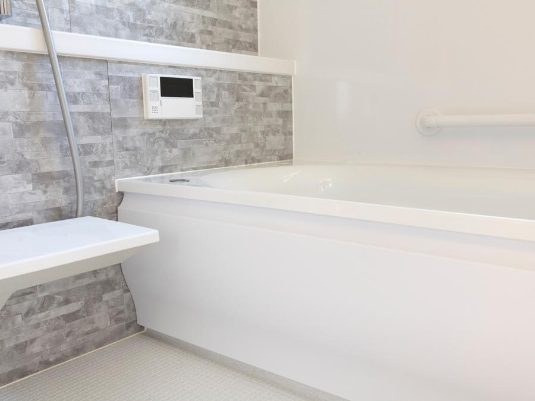

お湯がすぐ冷める。床のタイルが割れてきた。そろそろ、お風呂の替えどきです。
◯◯市で40年、水回りのリフォームを重ねてきた工務店です。事例と概算費用を先に公開しています。
比べてから、決めてください。
蛇口ひとつの交換から承ります。
相談・見積もりは無料です。

施工事例と概算費用
「うちの場合、いくら?」に先に答えます。
工期と費用を必ず載せています。

対面キッチンへの入れ替えと、床の張り替え

洗面台の交換と、脱衣室の床の底上げ
※ このサイトはポートフォリオ用のサンプルのため、
写真はAdobe Stockのイメージ写真です。
実際の制作では施工写真が入ります。
はじめての方へ
相見積もりの1社に入れていただければ
十分です。
比べたうえで選んでください。
費用は先に、総額で
事例ごとに概算費用を公開しています。
お見積もりも「一式」でまとめず、
内訳を出します。しつこい営業はしません
見積もり後にこちらから
何度もお電話することはありません。
ゆっくり比べてください。小さな工事こそ歓迎
蛇口ひとつ、
網戸一枚から。
小さな工事で仕事ぶりを見てもらえたら、
それが一番の営業だと考えています。地元で40年
◯◯市とその近隣だけで施工しています。
何かあれば当日中に伺える距離が、
品質の保証です。